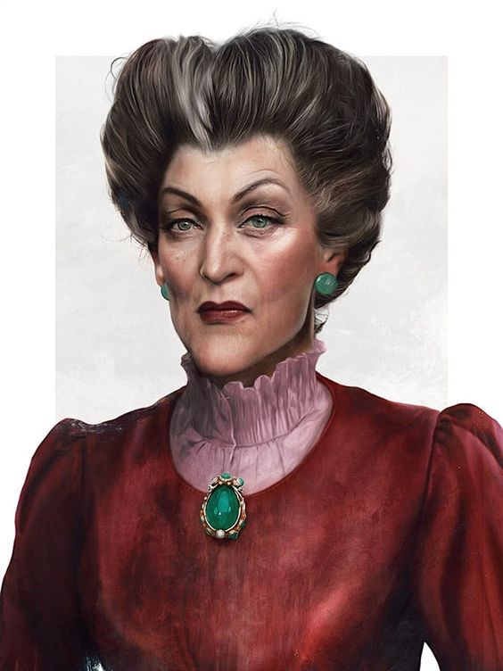
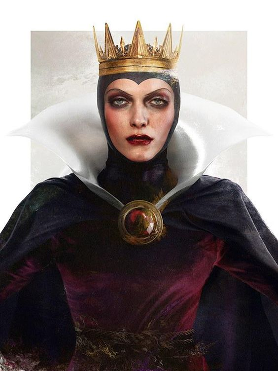
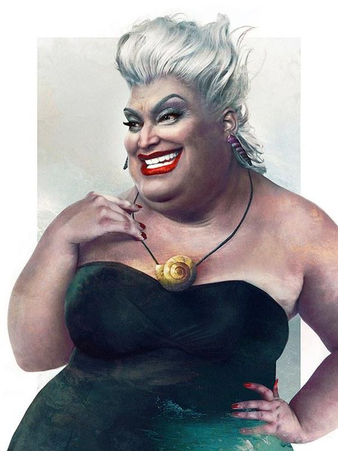
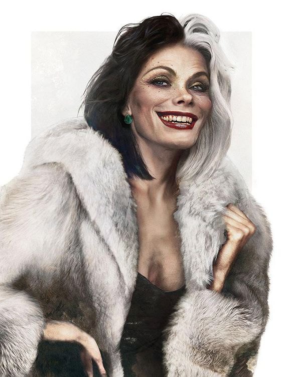
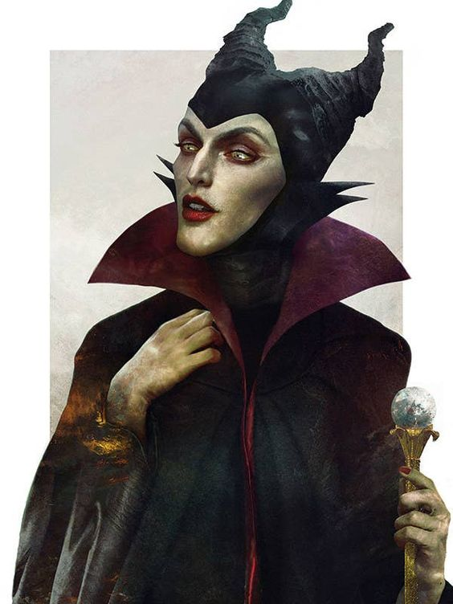

Te muestro mas sobre algunos de los Villanos de Disney más emblemáticos, te cuento su historia y varios datos curiosos.
LADY TREMAIN

Lady Tremaine, también conocida como "La Madrastra", es la perversa madrastra de Cenicienta, pero es mucho más que eso, es una dama de alta clase, es elegante y muy seria. Destrozada de la vida cuando le fue arrebatado el amor de su vida, el padres de sus hijas. Cuando el padre de Cenicienta murió, le dejó toda la fortuna a Lady Tremaine, para que lo invirtiera en el cuidado y el bienestar de Cenicienta, de Anastasia y Drizella y de ella misma. Al obtener el poder, la malvada madrastra mostró su verdadera forma de ser y la envidia que tenía a Cenicienta, tomando Lady Tremaine la casa, y dilapidando la fortuna en sus hijas y su comodidad, convirtiendo a Cenicienta en la sirvienta de su propia casa, explotándola y obligándola a trabajar en las tareas del hogar
LA REINA MALVADA

La Reina Malvada, también conocida como La Reina o simplemente conocida como Reina Grimhilde , es el principal antagonista de Blancanieves, y el primer villano de Disney en el canon de características animadas de Disney. Decidida a seguir siendo la más bella de todas, la Reina se vuelve locamente celosa de Blancanieves cuano el espejo mágico en la pared le dice que Blanca Nueves es la mas bellas de todas del reino, la única cuya belleza supera a la suya. Eventualmente se disfraza de anciana para tentar a Blancanieves a comer una manzana envenenada, en un intento final de acabar con su único rival desconocido. Representada en los primeros diseños como un personaje gordo, su apariencia finalmente se convirtió en una belleza mucho más siniestra y majestuosa. En general, es uno de los primeros villanos más emblemáticos y amenazantes de Disney.
URSULA

Ursula es considerada como La Bruja del Mar, posee una piel azulada, y en vez de piernas o cola de sirena, posee ocho tentáculos y cabello plateado, siendo el ser más temído en todos los siete mares, es la principal villana de la película La Sirenita, se desconocen el límite de sus poderes pues por si sola, solo puede realizar poderosos hechizo y encantamientos a base de obtener algo a cambio todo mediante un contrato, pero cuando llega a poseer el tridente del Rey Triton, es capaz de convertirse en el ser mas temible del mar, oceano y superficie ya que sus poderes pueden llegar a ser limitados y sin condiciones. Es media hermana del Rey de la Atlantida, el Rey Triton, padre de Ariel, quien comparten al mismo padre, ella obtiene gran parte de sus poderes gracias a una concha dorada mágica, otorhada por su padre quien este a su ves, le otorgo el tridente a su hermano Triton, se deconoce la capacidad de ella al mutar a cualquier forma viviente, pero sabemos que es capaz de convertirse en aparentemente un humano, cuando se transforma en humano se hace llamar Vanesa, una joven encantadora y atractiva que fácilmente consigue conquistar a los hombres por medio de su concha, posee el poder de la hipnosis y manipulación de mentes. Hasta ahora se desconoce que fue de ella despues de su enfrentamiento con el Principe Erick y Ariel, no se ha vuelto a saber de ella.
CRUELLA DE VIL

Es una excéntrica heredera de miles de dolares y bienes de su esposo fallecido, de quien ibtubo el apellido De Vil , su principal pasión es la moda y el arte, se desconoce sus incios, pero se asegura que en su juventud e inicios como villana, tuvo un trauma que la obsesiono con las pieles de animales, en especial con las pieles de los perros dalmatas. Considerada una "bruja" y una "mujer del diablo", la obsesión de Cruella por las pieles la lleva a la locura asesina. Para satisfacer su manía, comete actos inmorales, como secuestros y matanzas. Suele contar con la ayuda de sus secuaces, Gaspar y Horacio, aun que no le asen mucha falta, desde niña fue alguien incomprendida, es lo que en su juventud la lleva a tomar desiciones alocadas que poco a poco hicieron que perdiera la cordura.
MALÉFICA

Maléfica es una poderosa hechicera que se describe a sí misma como la "Emperatriz del Mal", si llegaste hasta este punto, es tiempo de que sepas que Malefica es considerada como la Villana de Disney mas malvada y poderosa de todas, solamente el poder de Hades (de Hércules)podría llegar a compararse con el de ella, pero aun así, nunca lo superaría. Ella es la personificación del mal, y es responsable de hacer caer toda desgracia sobre el reino del Rey Stéfano, como venganza por haberle roto el corazón y traicinarla cuando estos eran jovenes, Maléfica posee grandes poderes. Siempre tiene en sus manos un bastón, con una bola de cristal en uno de sus extremos. Siempre se encuentra rodeada en una epecie de aura y llamas verdes, se cree que es desendiente del mismo Mal, por eso su nombre, es capaz de la transformación y alteración de las celulas del cuero que la permiten mutar a cualquier cosa, como un dragón que es bien conocido, es capaz de la teletransportación, poderes omnipotentes gracias a su baston y se dice ser la dueña de todos los poderes del mal. Hay mucho tranfondo y dolor en su vida que la llevaron a seguir el camino del mal, mas sin embargó se desconoce bien como terminan las cosas para ella despues de su enfrentamiento con el Rey Stéfano por maldecir a su hija Aurora, unos dicen que encontro el amor de una hija en Aurora y otros dicen que calló en la desgracía por no complementar su malevolos planes.